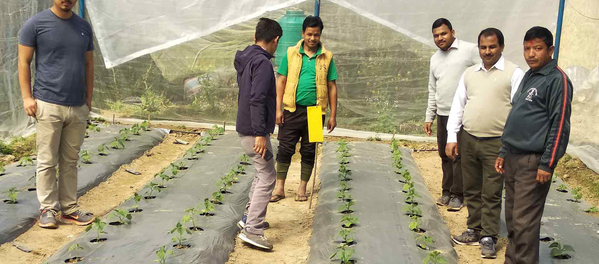
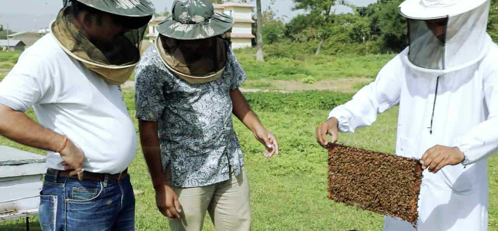

Raising Incomes of Small and Medium Farmers Project
Rural enterprise, market access and project knowledge.
A structured archive of the former RISMFP website, bringing project context, reports, notices, and the web-based MIS overview into one clear interface.

10historical focus districts
Field implementation connected farmers, service providers, cooperatives, and project teams.
890estimated farmer groups referenced in project material
Explore the archive
Project material organised around real visitor needs.
Start with the programme background, understand the monitoring system, or search the historical notices and reports retained from the former site.
01 · Programme
Project overview
Read the programme context, intended beneficiaries, interventions, and expected outcomes.
Open overview 02 · InformationWeb-based MIS
Understand how implementation information, indicators, and project documents were intended to work together.
View MIS 03 · ArchiveNews and notices
Search the titles retained from the former project interface.
Browse noticesProject in context
Agriculture was treated as both production and enterprise.
The retained photography shows the project operating through people, field activity, local organisations, and value-chain support.

Implementation depended on local partnerships.
The project model involved farmer groups, cooperatives, service providers, local organisations, and management teams.

High-value agriculture covered varied rural enterprises.
Support extended beyond crop production to technology, post-harvest systems, and market-oriented activities.
Archive status
The interface is active. Historical services are not.
This repository does not provide login access, grant applications, official records, or current project support. It reorganises material preserved in the original source code.